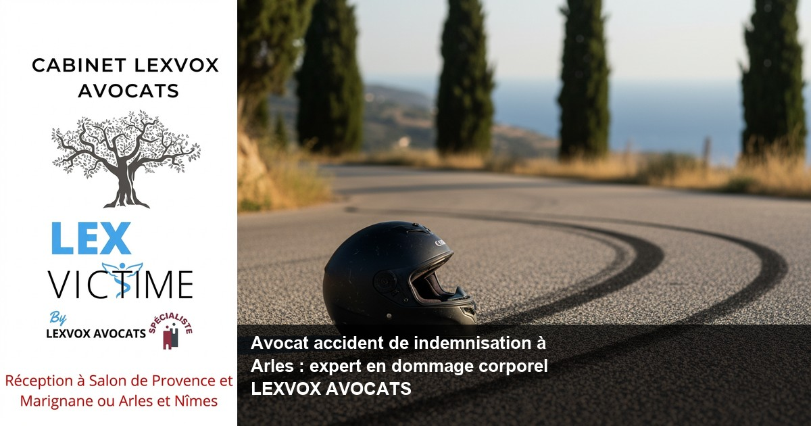

Accident de la route — Arles
Avocat accident de moto à Arles : indemnisation et dommage corporel

— Par Me Patrice Humbert, avocat au barreau d'Aix-en-Provence
Victime d'un accident de moto à Arles ? LEXVOX AVOCATS, avocat accident de indemnisation, vous accompagne pour obtenir la réparation intégrale de vos préjudices. Me Patrice Humbert, spécialiste CNB en dommage corporel avec plus de 20 ans d'expérience, défend vos droits face aux assureurs. Consultation gratuite 30 minutes au 04 90 54 58 10.
Obtenir la meilleure indemnisation possible : indemnisation des victimes et droit du dommage corporel à Arles
Un accident de moto peut transformer votre vie en quelques secondes. À Arles, sur les axes routiers comme l'A54, la RN113 ou la RN572, les accidents de motocyclistes sont malheureusement fréquents et souvent graves. L'indemnisation des victimes constitue un processus complexe nécessitant une expertise juridique pointue en droit du dommage corporel.
Les spécificités de l'indemnisation après un accident de moto
Les motocyclistes subissent généralement des préjudices plus lourds que les automobilistes. L'absence de carrosserie protectrice expose davantage aux traumatismes graves, aux fractures et aux préjudices esthétiques permanents. Chaque préjudice doit être évalué précisément pour obtenir une indemnisation juste.
LEXVOX AVOCATS, cabinet spécialisé depuis plus de 20 ans, maîtrise parfaitement ces enjeux spécifiques. Notre avocat expert en indemnisation analyse chaque dossier pour identifier l'ensemble de vos préjudices : préjudice corporel, préjudice professionnel, préjudice d'agrément, souffrances endurées, préjudice esthétique temporaire et permanent.
L'importance d'un accompagnement spécialisé
Face aux compagnies d'assurance, la présence d'un avocat spécialisé en indemnisation change radicalement l'issue des négociations. Les assureurs disposent de leurs propres médecins-conseils et experts pour minimiser les indemnisations. Sans assistance d'un avocat expérimenté, vous risquez d'accepter une offre largement inférieure à ce que vous devriez percevoir.
Selon l'expérience du cabinet (20+ ans, centaines de dossiers), une victime accompagnée par un avocat obtient en moyenne une indemnisation 2 à 3 fois supérieure à celle proposée initialement par l'assureur.
Accompagner par un avocat : un accident de la route et faire appel à un avocat à Arles
Faire appel à un avocat suite à un accident constitue souvent la décision la plus importante pour votre avenir. À Arles, LEXVOX AVOCATS intervient dès les premiers instants pour sécuriser votre dossier et préserver vos droits des victimes.
Intervention immédiate après l'accident
Dès réception de votre appel au 04 90 54 58 10, notre équipe se mobilise. Un accident de la route génère immédiatement des enjeux juridiques cruciaux : préservation des preuves, déclarations aux assurances, choix des médecins, orientation vers les bons établissements de soins.
Le Centre hospitalier Joseph Imbert d'Arles prend en charge les urgences traumatologiques. Cependant, certaines pathologies spécialisées nécessitent un transfert vers des centres experts de Marseille ou d'Aix-en-Provence. Ces décisions médicales initiales impactent directement votre procédure d'indemnisation future.
Défense face aux premiers contacts de l'assurance
Les compagnies d'assurance contactent rapidement les victimes, souvent dans les heures suivant l'accident. Ces premiers échanges sont déterminants. Un avocat spécialisé vous protège contre les questions piégées et les propositions d'indemnisation prématurées.
Notre cabinet intervient également auprès du responsable de l'accident et de sa compagnie d'assurance pour établir clairement les responsabilités et préserver votre droit à réparation intégrale.
Gestion des relations avec votre propre assureur
Votre propre assurance peut intervenir dans certains cas : garanties corporelles du conducteur, protection juridique, recours contre les tiers. Ces mécanismes complexes nécessitent une coordination précise pour optimiser votre indemnisation globale.
Expert en indemnisation : défense des victimes et réparation intégrale à Arles
La défense des victimes d'accidents exige une expertise technique pointue. LEXVOX AVOCATS cumule la spécialisation CNB en dommage corporel et une certification unique en intelligence artificielle, outils modernes au service de la défense des victimes d'accidents de la route.
Évaluation médico-légale des préjudices
Chaque poste de préjudice doit être identifié, évalué et chiffré selon la nomenclature Dintilhac. Cette approche systématique distingue :
Préjudices patrimoniaux temporaires :- Dépenses de santé actuelles
- Frais divers
- Pertes de gains professionnels actuels
- Incidence professionnelle temporaire
- Dépenses de santé futures
- Frais de logement adapté
- Assistance par tierce personne
- Pertes de gains professionnels futurs
- Incidence professionnelle permanente
- Déficit fonctionnel temporaire
- Souffrances endurées
- Préjudice esthétique temporaire
- Déficit fonctionnel permanent
- Préjudice esthétique permanent
- Préjudice d'agrément
- Préjudice sexuel
Contre-expertise médicale
L'expertise médicale constitue l'étape cruciale de toute procédure d'indemnisation. L'expert désigné par l'assureur n'est pas votre médecin. Sa mission consiste à évaluer vos préjudices selon les barèmes les plus favorables à l'assureur.
Notre cabinet organise systématiquement votre défense lors de cette expertise : préparation du dossier médical, désignation d'un médecin-conseil de victimes, assistance durant l'expertise, contestation si nécessaire. Cette approche professionnelle permet d'obtenir une évaluation plus juste de vos séquelles.
Négociation avec les assureurs
Fort de son expérience sur plusieurs centaines de dossiers, LEXVOX AVOCATS maîtrise parfaitement les techniques de négociation avec toutes les compagnies d'assurance. Chaque assureur a ses méthodes, ses barèmes internes, ses points de résistance. Cette connaissance pratique optimise votre indemnisation finale.
Accident de la vie : avocat de victimes et avocat spécialisé à Arles
Au-delà des accidents de la route, LEXVOX AVOCATS intervient pour tous les accidents de la vie. Ces événements imprévisibles bouleversent brutalement votre quotidien et celui de vos proches.
Diversité des accidents pris en charge
Notre expertise couvre l'ensemble des situations génératrices de dommage corporel :
- Accidents de la circulation (moto, auto, piéton, cycliste)
- Accidents du travail et maladies professionnelles
- Accidents médicaux et infections nosocomiales
- Agressions et infractions pénales
- Accidents domestiques graves
- Accidents de sport et de loisirs
Accompagnement des victimes d'erreurs médicales
Les victimes d'erreurs médicales font face à des procédures spécifiques. La loi du 4 mars 2002 relative aux droits des malades et à la qualité du système de santé a créé des mécanismes particuliers d'indemnisation via les Commissions Régionales de Conciliation et d'Indemnisation (CRCI) et l'ONIAM.
Une maladie infectieuse contractée lors d'un séjour hospitalier, une erreur chirurgicale, un retard diagnostique peuvent justifier une indemnisation. Les métiers de la santé sont soumis à une obligation de sécurité renforcée. Notre cabinet maîtrise ces procédures complexes impliquant établissements de santé, professionnels de santé et assurances spécialisées.
Prise en charge psychologique des victimes
Un accident génère souvent un traumatisme psychologique durable. La psychologie de la victime doit être prise en compte dans l'évaluation des préjudices. Le stress post-traumatique, l'anxiété, la dépression réactionnelle constituent des séquelles indemnisables au même titre que les atteintes physiques.
Une indemnisation : assurance et expertise à Arles
Le processus d'indemnisation mobilise de nombreux intervenants : assureurs, experts, médecins-conseils, avocats. Cette multiplicité d'acteurs complexifie les procédures et nécessite une coordination rigoureuse.
Les différents régimes d'indemnisation
Selon les circonstances de l'accident, plusieurs systèmes d'indemnisation peuvent s'appliquer :
Droit commun de la responsabilité civile : Le responsable de l'accident indemnise les dommages causés via son assurance responsabilité civile. Loi Badinter du 5 juillet 1985 : Protection renforcée des victimes d'accidents de la circulation. Les piétons, cyclistes et passagers bénéficient d'une indemnisation quasi-automatique. Accidents du travail : Double indemnisation possible via la Sécurité Sociale et l'action en faute inexcusable de l'employeur. Fonds de Garantie : Indemnisation par le FGTI en cas de responsable non assuré ou non identifié.Optimisation de votre indemnisation
Chaque régime présente des avantages et inconvénients. Un avocat expert analyse votre situation pour choisir la voie procédurale la plus favorable. Cette stratégie juridique peut faire varier votre indemnisation de plusieurs dizaines de milliers d'euros.
Les jurisprudences récentes de la Cour de Cassation et des Cours d'Appel évoluent constamment. Nos confrères à Paris et Bordeaux nous transmettent régulièrement les dernières décisions favorables aux victimes. Cette veille juridique bénéficie directement à nos clients.
Préjudice et honoraire : votre avocat à Arles
La question des honoraires d'avocat préoccupe légitimement les victimes. LEXVOX AVOCATS a développé une politique tarifaire transparente et équitable, alignée sur les enjeux de votre dossier.
Structure des honoraires
Nos honoraires combinent deux composantes :
- Part fixe : À partir de 700 € HT, couvrant les frais de gestion du dossier, les démarches administratives, la correspondance avec les assureurs
- Part au résultat : 10 à 15% de l'indemnisation obtenue, garantissant notre engagement pour optimiser votre réparation
Cette structure vous protège : pas d'indemnisation, pas d'honoraires au résultat. Notre intérêt s'align ainsi parfaitement sur le vôtre.
Prise en charge des honoraires
Dans certains cas, vos honoraires peuvent être pris en charge :
- Assurance protection juridique : Vérifiez vos contrats auto, habitation, carte bancaire
- Aide juridictionnelle : Selon vos ressources
- Condamnation du responsable : L'article 700 du Code de procédure civile permet de récupérer une partie des honoraires
Consultation initiale gratuite
LEXVOX AVOCATS offre une consultation gratuite de 30 minutes pour évaluer votre situation. Cette première analyse permet de déterminer la faisabilité de votre action et les perspectives d'indemnisation. Contactez-nous au 04 90 54 58 10 ou par email : contact@avocat-lexvox.com.
Procédure d'indemnisation à Arles : les étapes avec LEXVOX AVOCATS
La procédure d'indemnisation suit un calendrier précis que maîtrise parfaitement LEXVOX AVOCATS. Chaque étape de la procédure doit être respectée pour optimiser votre dossier.
Phase d'urgence (0 à 3 mois)
Déclaration d'accident : Transmission immédiate aux assurances avec préservation de tous les éléments de preuve. Soins médicaux : Orientation vers les praticiens compétents, constitution du dossier médical, liaison avec les équipes soignantes. Expertise véhicule : Pour les accidents de moto, l'état du véhicule fournit des indications sur la violence du choc. Avances sur indemnisation : Demande d'provisions pour faire face aux dépenses immédiates.Phase de consolidation (3 mois à 2 ans)
Suivi médical : Coordination avec vos médecins traitants, spécialistes, kinésithérapeutes pour optimiser votre récupération. Évaluation des séquelles : Bilan médical précis de l'état séquellaire, préparer l'expertise d'assurance. Constitution du dossier : Rassemblement de tous les justificatifs médicaux, financiers, professionnels.Phase d'expertise (après consolidation)
Expertise médicale contradictoire : Accompagnement lors de l'examen, assistance d'un médecin-conseil, contestation si nécessaire. Évaluation des préjudices : Chiffrage précis de chaque poste selon les barèmes jurisprudentiels. Négociation amiable : Discussion avec l'assureur sur la base du rapport d'expertise.Phase de règlement

Vos questions sur avocat accident de indemnisation à arles : expert en dommage
Combien de temps dure une procédure d'indemnisation ?
La durée varie selon la gravité des blessures et la complexité du dossier. Pour un accident de moto avec fractures, comptez 18 mois à 3 ans entre l'accident et l'indemnisation définitive. Cette durée s'explique par la nécessité d'attendre la consolidation médicale avant de chiffrer les séquelles permanentes.
Puis-je changer d'avocat en cours de procédure ?
Oui, vous conservez toujours la liberté de changer d'avocat. LEXVOX AVOCATS reprend régulièrement des dossiers mal engagés par d'autres confrères. Cette reprise nécessite une analyse complète pour rattraper les erreurs éventuelles et réorienter la stratégie.
Que faire si l'assurance ne répond pas ?
L'absence de réponse de l'assureur constitue un refus implicite d'indemnisation. Après mise en demeure restée sans suite, une assignation devant le Tribunal judiciaire de Tarascon s'impose. Cette procédure contraignante incite généralement l'assureur à reprendre les négociations.
Mon assurance peut-elle résilier mon contrat après un accident ?
Après un accident responsable, votre assureur peut résilier votre contrat à l'échéance annuelle. Cette résiliation complique la recherche d'un nouvel assureur et augmente les primes. Un avocat peut contester certaines résiliations abusives ou vous orienter vers le Bureau Central de Tarification.
Les frais médicaux non remboursés sont-ils indemnisables ?
Tous vos frais médicaux liés à l'accident doivent être indemnisés : dépassements d'honoraires, chambre particulière, médecines douces prescrites, matériel médical. Conservez précieusement tous les justificatifs. L'assurance du responsable rembourse l'intégralité de ces dépenses.
Comment est calculé le préjudice professionnel ?
Le préjudice professionnel comprend les pertes de gains passées et futures. Pour un salarié, le calcul s'appuie sur les bulletins de salaire et l'évolution de carrière probable. Pour un indépendant, les déclarations fiscales et comptables servent de référence. L'incidence professionnelle (pénibilité accrue, limitation des perspectives) s'ajoute aux pertes strictement financières.
Synthèse : votre droit à la réparation intégrale ?
Le droit du dommage corporel garantit à toute victime d'un accident une indemnisation intégrale de ses préjudices. Cette indemnisation accident doit couvrir l'ensemble des dommages subis, qu'ils soient patrimoniaux ou extrapatrimoniaux. Pour obtenir une indemnisation juste, l'assistance d'un avocat expert constitue un atout décisif. La réparation du dommage corporel nécessite une approche méthodique respectant les droits des victimes et la spécificité de chaque situation. Un avocat spécialisé en indemnisation maîtrise parfaitement la réparation du préjudice corporel et les mécanismes permettant de défendre les victimes efficacement. L'indemnisation préjudice corporel mobilise des connaissances techniques pointues que seul un avocat spécialiste peut apporter. Suite à un accident, faire appel à un avocat expérimenté change radicalement les perspectives d'indemnisation. L'accompagner par un avocat permet d'identifier chaque poste de préjudice et d'obtenir la meilleure indemnisation possible. Les victimes d'accidents de la route bénéficient de protections spécifiques, mais les indemnisations proposées par les compagnies d'assurance restent souvent insuffisantes. La présence d'un avocat de victimes rééquilibre les rapports de force. L'avocat expert analyse les circonstances de l'accident, identifie le responsable de l'accident et engage la procédure d'indemnisation appropriée. Chaque victime d'un accident mérite une indemnisation complémentaire couvrant l'intégralité de ses préjudices. Les accidents de la vie génèrent des traumatismes durables nécessitant un arrêt de travail et des soins prolongés. La défense des victimes d'accidents passe par une évaluation rigoureuse réalisée avec l'assistance d'un médecin-conseil de victimes. Cette expertise contradictoire permet aux victimes d'accidents d'obtenir une indemnisation d'un accident à la hauteur des dommages réellement subis. Qu'un accident survienne sur la route, au travail ou dans la vie courante, les victimes d'accident conservent les mêmes droits fondamentaux à réparation face à leur compagnie d'assurance.
Procédure d'indemnisation à Arles : les étapes avec LEXVOX ?
LEXVOX AVOCATS structure chaque dossier selon une méthodologie éprouvée sur plusieurs centaines de cas d'accident. Cette approche systématique optimise les délais et maximise les indemnisations obtenues.
Première consultation gratuite — 30 min
Besoin d'un avocat spécialisé à Arles ? Nous évaluons votre dossier gratuitement et vous indiquons vos droits à réparation.
Cabinet LEXVOX AVOCATS — Me Patrice Humbert — Spécialisation CNB dommage corporel — Bureaux à Aix-en-Provence, Salon-de-Provence, Arles et Marignane